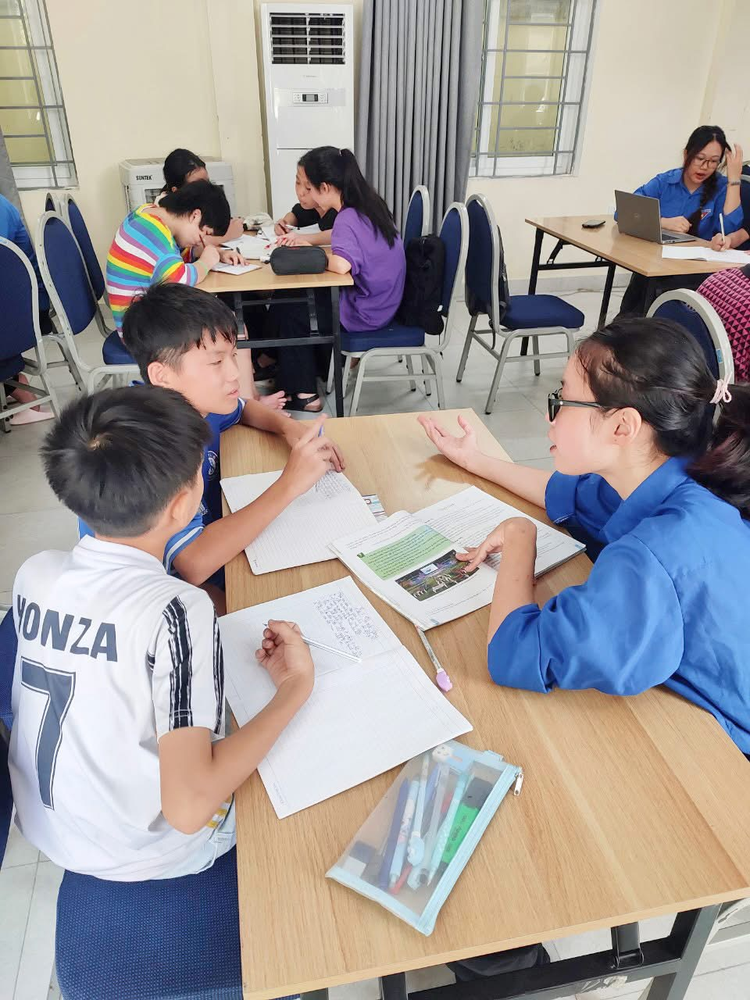
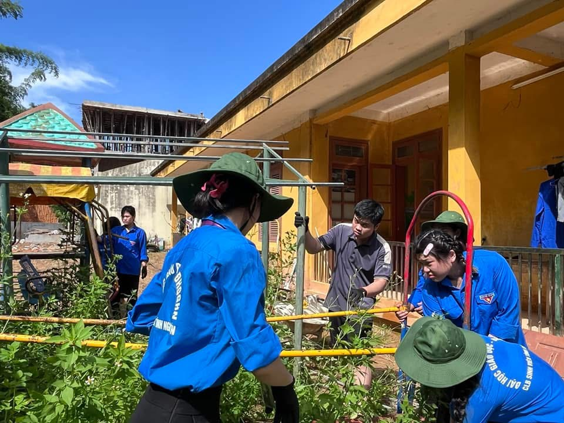
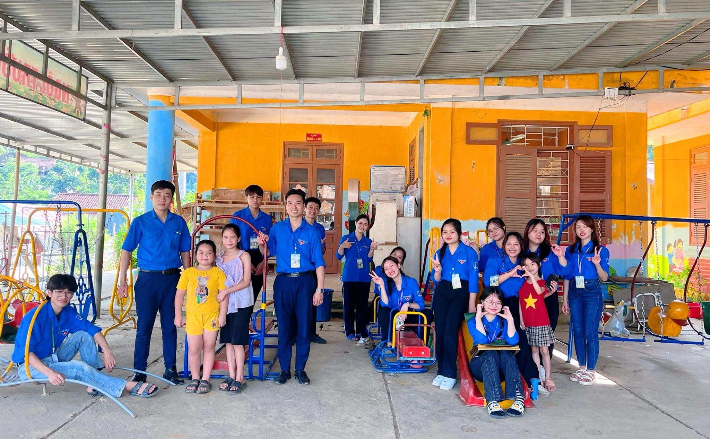
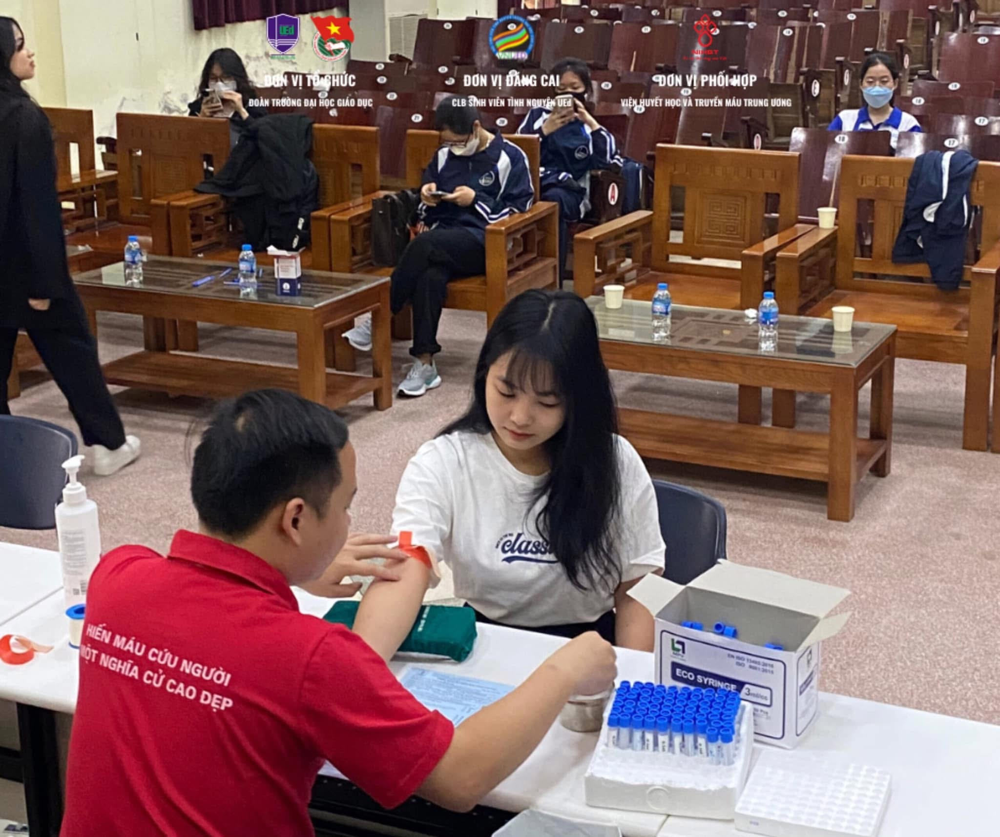

Chào mừng đến với EDUSERVICE – Nơi Đam Mê Gặp Gỡ Sứ Mệnh
Trong một môi trường học tập giàu tính nhân văn và hướng đến sự phát triển toàn diện, EDUSERVICE – thuộc Trường Đại học Giáo dục – chính là cánh cửa mở ra những trải nghiệm ý nghĩa dành cho sinh viên. Chúng tôi tin rằng hạnh phúc và thành công không chỉ đến từ kiến thức hàn lâm, mà còn từ những đóng góp thiết thực cho cộng đồng và dấu ấn tích cực để lại trong cuộc sống của người khác.
Tại EDUSERVICE, chúng tôi kết nối sinh viên có tinh thần trách nhiệm xã hội với các cơ hội tình nguyện phong phú và giá trị trong và ngoài nước. Dù bạn quan tâm đến giáo dục, môi trường, y tế cộng đồng hay các hoạt động hỗ trợ vùng khó khăn, nền tảng của chúng tôi sẽ là cầu nối giúp bạn lan tỏa giá trị nhân văn và phát triển năng lực thực tiễn.
Tình nguyện không chỉ là hành động sẻ chia, mà còn là quá trình trưởng thành. Đó là cơ hội để sinh viên bước ra khỏi giảng đường, tiếp cận thực tiễn xã hội, xây dựng những kết nối bền vững và thấu hiểu sâu sắc hơn về vai trò của mình trong việc kiến tạo một thế giới tốt đẹp hơn.
Hãy cùng EDUSERVICE tạo nên những hành trình ý nghĩa ngay từ hôm nay – nơi mỗi bước đi tình nguyện không chỉ góp phần thay đổi cộng đồng, mà còn nuôi dưỡng tâm hồn, kỹ năng và bản lĩnh của người giáo dục tương lai. 🌍✨
Tìm kiếm cơ hội tình nguyện
Tại EDUSERVICE, bạn có thể dễ dàng tìm thấy các hoạt động tình nguyện phù hợp với sở thích và kỹ năng của mình. Một số lĩnh vực tiêu biểu bao gồm:

📚 Giáo dục: Tham gia giảng dạy, tổ chức lớp học miễn phí cho trẻ em có hoàn cảnh khó khăn – cơ hội để bạn áp dụng kiến thức sư phạm vào thực tiễn.

🌱 Môi trường: Góp phần bảo vệ hành tinh xanh qua các hoạt động như trồng cây, dọn vệ sinh, tái chế và nâng cao ý thức cộng đồng về môi trường.

🤝 Cộng đồng: Đồng hành cùng các chương trình giúp đỡ người già, trẻ em mồ côi, người khuyết tật hoặc vùng khó khăn – nơi bạn học cách thấu cảm và sẻ chia.

❤️ Sức khỏe: Tham gia hiến máu, hỗ trợ các chiến dịch truyền thông nâng cao nhận thức cộng đồng về sức khỏe và lối sống lành mạnh.
Lời kêu gọi hành động
Đừng chờ đợi một cơ hội hoàn hảo – chính bạn có thể tạo ra sự thay đổi ngay từ hôm nay. Mỗi hành động nhỏ, mỗi bước chân bạn đi đều góp phần xây dựng một cộng đồng tốt đẹp và nhân văn hơn.
Hãy bước ra khỏi vùng an toàn, mở lòng mình và hành động vì những giá trị lớn lao. Cộng đồng đang cần bạn – và bạn đã sẵn sàng để tạo nên khác biệt? Hãy đăng kí ngay!